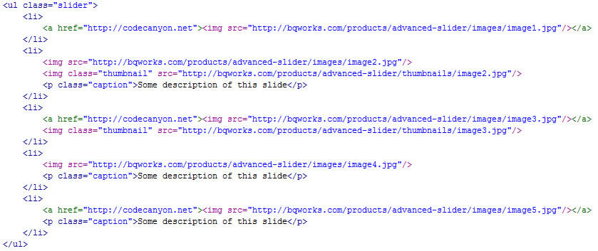

“Advanced Slider” Documentation by “bqworks”
“Advanced Slider”
Created: 15/10/2010
By: bqworks
Email: contact@bqworks.com
Thank you for purchasing my file. If you have any questions, please feel free to ask in the item's discussion page or send me an email. Thanks again and I hope you will enjoy using this plugin.
Table of Contents
A. Introduction
To apply this plugin to a div element you simply select its ID or class name. The plugin will delete all the content of the selected div and will create the slider in it. If a user doesn't have Javascript enabled, the slider won't be created and instead the initial content of the div will be displayed.
B. Using HTML
The plugin gives you flexibility in choosing the HTML markup for your slider. You can use ordered/unordered list but you can also use divs. Below are two examples, one using unordered list and one using divs.
Unordered list example:
Div example:
You can see in the examples above the structure of the HTML markup. The large images are specified using <img> tags and if the images have links, the <img> tags must be wrapped by <a> tags. If you want to have thumbnails for your slides, you need to specify them in <img> tags as well but you will also need to assign them the "thumbnail" class, as you can see in the examples. Also, if you want to have captions you will specify them in <p> or <div> tags and assign them the "caption" class.
C. Using XML
The XML support is one of the most important features of this plugin because it makes it very easy for you to update the slider's content. This is the XML structure that you need to use:

For each slide you want to add to the slider, you need to create a new <slide> node. Inside the <slide> node you will add all the slide's data. You can see in the above example that I've added the <path> tag to specify the path to the slide's image but there are other details that you can add for each slide, like thumbnail, caption and link.
Inside the <thumbnail> tag you can specify a smaller version of the slide's image while the <link> tag allows you to specify a link to navigate to when the user clicks on the slide. As the name suggests, the <caption> tag is used to specify a caption for the slide, and this caption can be simple text or HTML content. If you want to use HTML content, you must write it inside the CDATA tag. Let's see how the XML file will look like with all these additional tags:
After creating the XML file, all you need to do is pass the path of the XML file to the slider instance:

In the next chapter I will show you how you can further extend the use of the XML file to create a unique transition effect for each slide.
D. JavaScript Reference
This plugin has several customizable properties that can be set when the plugin is instantiated.
Bellow is a list of all the available properties with their default value and description.
- xmlSource - null - the path to the XML source file
- width - 500 - the width of the slider
- height - 300 - the height of the slider
- alignType - 'leftTop' - indicates the alignment of the image if it's size is higher than the specified width or height. Available values are: 'leftTop', 'leftCenter', 'leftBottom', 'centerTop', 'centerCenter', 'centerBottom', 'rightTop', 'rightCenter', 'rightBottom'
- slideshow - true - sets the slider to the auto slideshow mode
- slideshowDelay - 5000 - the delay, in milliseconds, between transitions
- slideshowDirection - 'next' - sets the slider to navigate to the next slide or to the previous slide.
- slideshowControls - true - displays the play/pause button for the slideshow.
- timerAnimation - true - indicates whether the timer animation will be displayed. For this to be displayed the 'slideshow' property also has to be set to 'true'
- timerFadeDuration - 500 - the duration for the timer to fade in/out
- hideTimer - false - indicates whether the timer will be hidden and only shown on mouse over
- timerRadius - 18 - the radius of the timer circle
- timerStrokeColor1 - '#000000' - the color of the underlying circle
- timerStrokeColor2 - '#FFFFFF' - the color of the animated circle
- timerStrokeOpacity1 - 0.5 - the alpha of the underlying circle
- timerStrokeOpacity2 - 0.7 - the alpha of the animated circle
- timerStrokeWidth1 - 8 - the width of the underlying circle's stroke
- timerStrokeWidth2 - 4 - the width of the animated circle's stroke
- linkTarget - '_blank' - indicates where the URL window will be opened if a link was specified. Possible values are '_blank', '_self', '_parent', '_top'
- slideStart - 0 - the index of the first displayed slide
- slidesPreloaded - 0 - indicates how many slides will be preloaded before the first slide is displayed
- shuffle - false - randomizes the slides
- effectType - 'fade' - the type of the transition effect. Available values are: 'fade', 'scale', 'width', 'height', 'slide' and 'random'
- sliceDelay - 50 - the delay between each slice animation
- sliceDuration - 1000 - the duration for each slice animation
- horizontalSlices - 5 - the number of horizontal slices
- verticalSlices - 3 - the number of vertical slices
- slicePattern - 'random' - the order in which the slices will be animated. Available values are: 'randomPattern', 'topToBottom', 'bottomToTop', 'leftToRight', 'rightToLeft', 'topLeftToBottomRight', 'topRightToBottomLeft', 'bottomLeftToTopRight', 'bottomRightToTopLeft', 'horizontalMarginToCenter', 'horizontalCenterToMargin', 'marginToCenter', 'verticalCenterToMargin', 'skipOneTopToBottom', 'skipOneBottomToTop', 'skipOneLeftToRight', 'skipOneRightToLeft', 'skipOneHorizontal', 'skipOneVertical', 'spiralMarginToCenterCW', 'spiralMarginToCenterCCW', 'spiralCenterToMarginCW', 'spiralCenterToMarginCCW' and 'random'
- slicePoint - 'centerCenter' - determines the starting point for the slice animation when the 'scale', 'width' or 'height' effects are used. Available values are: 'leftTop', 'leftCenter', 'leftBottom', 'centerTop', 'centerCenter', 'centerBottom', 'rightTop', 'rightCenter', 'rightBottom' and 'random'
- slideStartPosition - 'left' - the starting position of the slice animation when the "slide" effect is used. Available values are: 'left', 'right', 'top', 'bottom', 'leftTop', 'rightTop', 'leftBottom', 'horizontalAlternative', 'verticalAlternative' and 'random'
- slideStartRatio - 1 - sets the actual distance between the starting and ending point for the 'slide' animation. The actual distance will be determined by multiplying the slice's width/height to the 'slideStartRatio' property
- sliceFade - true - will set the opacity of the slices to 0 and fade them in during the animation.
- slideMask - false - indicates whether or not the slide will have overflow hidden during the transition
- navigationArrows - true - displays the right and left arrows
- hideNavigationArrows - true - if it's true, the arrow buttons will fade in on mouse over and fade out on mouse out. If it's false, the buttons will be visible all the time.
- navigationButtons - true - displays the navigation buttons
- navigationButtonsCenter - true - will center the navigation buttons horizontally
- showThumbnails - true - displays a thumbnail when a navigation button is rolled over
- thumbnailSlide - 10 - indicates how much will the thumbnail slide when it's added to the stage
- thumbnailDuration - 300 - the duration, in milliseconds, of the thumbnail's fade animation
- captionPosition - 'bottom' - sets the caption's position. Available values are: 'top', 'bottom', 'left', 'right' and 'custom'.
- captionSize - 70 - sets the width/height of the caption's background, unless the caption's position is 'custom'.
- captionLeft - 50 - sets the left position of the caption when captionPosition is 'custom'
- captionTop - 50 - sets the top position of the caption when captionPosition is 'custom'
- captionWidth - 300 - sets the width of the caption when captionPosition is 'custom'
- captionHeight - 100 - sets the height of the caption when captionPosition is 'custom'
- captionShowEffect - 'slide' - sets the type of effect that will run when the caption appears. Available values are 'fade' and 'slide'
- captionShowEffectDuration - 500 - sets the duration, in milliseconds, of the show effect
- captionShowSlideDirection - 'auto' - sets the direction in which the caption will slide when it appears. Possible values are 'topToBottom', 'bottomToTop', 'leftToRight', 'rightToLeft' and 'auto'. When 'auto' is used, the direction will depend on the captionPosition property. So, if captionPosition is 'top', the caption will slide from top to bottom, if captionPosition is 'left', the caption will slide from left to right and so on.
- captionHideEffect - 'fade' - sets the type of effect that will run when the caption is removed. Available values are 'fade' and 'slide'
- captionHideEffectDuration - 300 - sets the duration, in milliseconds, of the hide effect
- captionHideSlideDirection - 'auto' - similar to the 'captionShowSlideDirection' but applied when the caption is removed.
- slideProperties - null - an object that allows to define a set of settings for each particular slide
When you set any of these properties they will apply globally, for all the slides, but you can override some of these global settings by setting specific values for each slide. This can be done for both HTML sliders and XML-driven sliders.. The following properties can be set: alignType, effectType, sliceDelay, sliceDuration, horizontalSlices, verticalSlices, slicePattern, slicePoint, slideStartPosition, slideStartRatio, sliceFade, slideMask, captionSize, captionPosition, captionShowEffectDuration, captionHideEffectDuration, captionShowEffect, captionHideEffect, captionLeft, captionTop, captionWidth, captionHeight, captionShowSlideDirection and slideshowDelay.
You will have to pass these individual settings to the "slideProperties" object. For example if you want to edit the 1st and 4th slide, you will do this: slideProperties:{0:{effectType:'fade', horizontalSlices:4, verticalSlices:3, slicePattern:'bottomRightToTopLeft'}, 3:{effectType:'slide', slideMask:true}}. You can see that first you indicate the index of the slide (note that enumeration starts from 0) and then to this index you pass an object that contains the settings.
For XML-driven sliders, you also have the option to specify the settings using attributes for each <slide> tag. Let's see an example:
The plugin also provides a few callback functions: transitionStart, transitionComplete, slideOpen, slideClick, slideMouseOver and slideMouseOut. Each of these callback functions will return an object that contains information about the slide that triggered the event. The information contained is the index of the slide(0, 2, 5 etc.), the type of event(slideClick, transitionComplete etc.) and a 'data' object that contains all the slide's information that was specified for that slide.
And this is displayed in Firebug's console:
This plugin also provides a few public methods/functions that can be called using external controls.
- nextSlide() - opens the next slide
- previousSlide() - opens the previous slide
- gotoSlide(index) - opens the slide at the specified index
- startSlideshow() - starts the slideshow mode
- stopSlideshow() - stops the slideshow mode
- getSlideshowState() - gets the current slideshow state. Returns 'play' or 'pause'
- getCurrentIndex() - gets the index of the current slide
- getSlideAt(index) - gets all the data of the slide at the specified index. Returns an object that contains all the data specified for that slide
- isTransition() - checks if the slider is in the transition phase. Returns true or false
E. CSS
Some aspects of the slider can be customized from within the CSS file. For example you can change the graphics for some of the elements, or their position. If you open the advanced-slide.css file you will see that the names used for the classes are suggestive for the elements they are applied to. So, if you want to replace the main preloader, you will just go to ".advanced-slider .preloader" and specify a different background image. Or, if you want to change the position of the navigation buttons you will go to ".advanced-slider .buttons-navigation" and specify the values you want for the 'top', 'left', 'bottom' or 'right' properties. There are many customizations that can be done from within the CSS file, so I'm not going to enumerate them all, but if there's something you can't figure out how to modify, please feel free to ask for my assistance.
F. Credits
- “jQuery” JavaScript library.
Once again, thank you for purchasing my plugin and if you need any help please let me know.